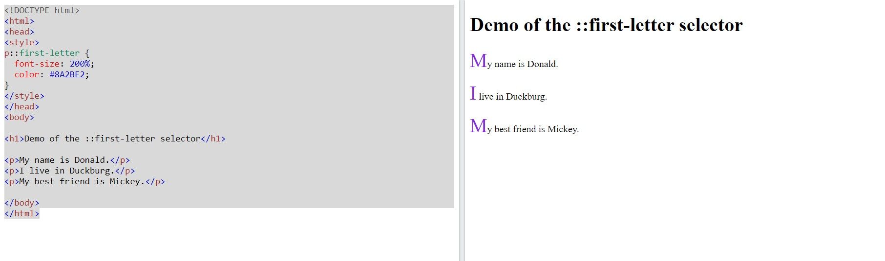
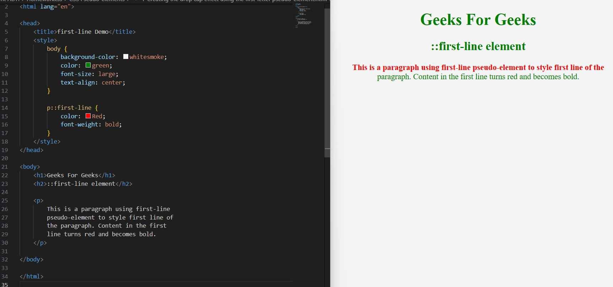
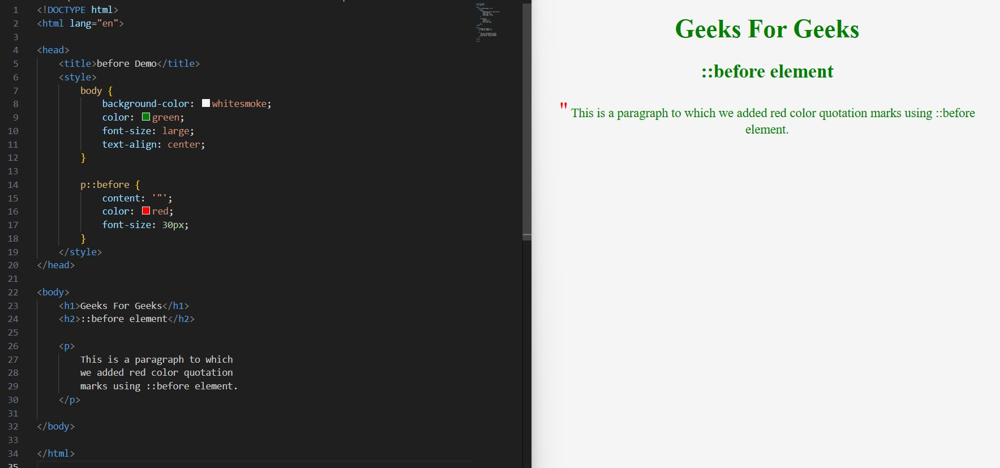
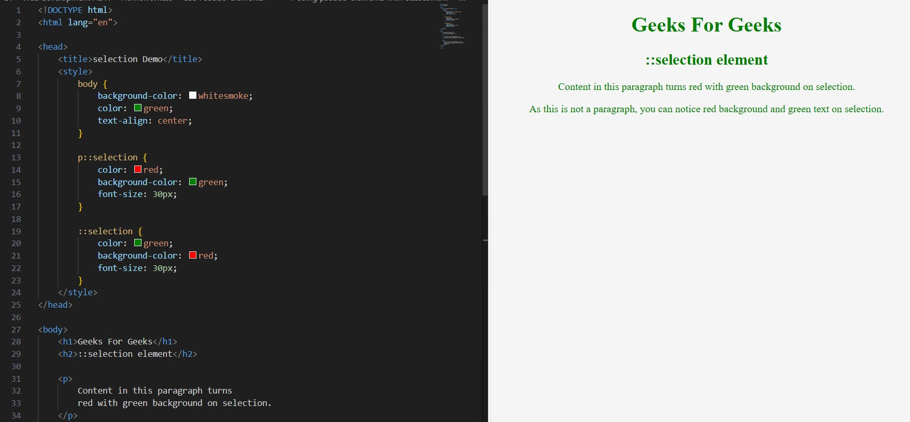

CSS Tables
CSS Pseudo-elements
• Creating the drop cap effect using the ::first-letter pseudo-element

• Styling the first line of a text differently using the ::first-line pseudo-element

• Insert some content before and/or after an element using the ::before and/or ::after pseudo-element

• Using pseudo-elements with classes
